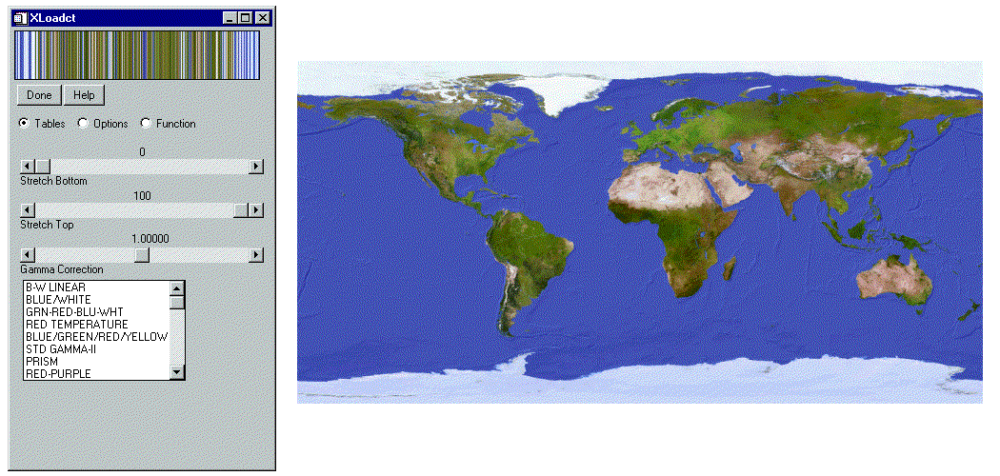
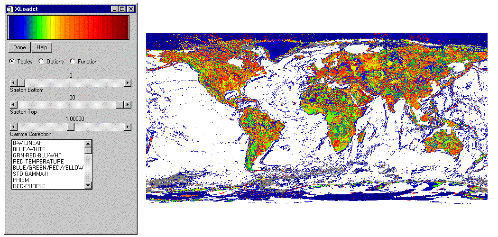

The QUERY_IMAGE function determines whether a file is recognized as a supported image file. QUERY_IMAGE first checks the filename suffix, and if found, calls the corresponding QUERY_ routine. For example, if the specified file is image.bmp, QUERY_BMP is called to determine if the file is a valid .bmp file. If the file does not contain a filename suffix, or if the query fails on the specified filename suffix, QUERY_IMAGE checks against all supported file types.
Result = QUERY_IMAGE( Filename [, Info] [, CHANNELS = variable ] [, DIMENSIONS = variable ] [, HAS_PALETTE = variable ] [, IMAGE_INDEX = index ] [, NUM_IMAGES = variable ] [, PIXEL_TYPE = variable ] [, SUPPORTED_READ = variable ] [, SUPPORTED_WRITE = variable ] [, TYPE = variable ] )
Result is a long with the value of 1 if the query was successful (the file was recognized as an image file) or 0 on failure. The return status will indicate failure for files that contain formats that are not supported by the corresponding READ_* routine, even though the file may be valid outside the IDL environment.
If the file is a supported image file, an optional structure containing information about the image is returned. If the file is not a supported image file, QUERY_IMAGE returns 0.
A required scalar string containing the name of the file to query.
An optional anonymous structure containing information about the image. This structure is valid only when the return value of the function is 1. The Info structure for all image types has the following fields:
|
Tag |
Type |
|
CHANNELS |
Long |
|
DIMENSIONS |
Two-dimensional long array |
|
HAS_PALETTE |
Integer |
|
IMAGE_INDEX |
Long |
|
NUM_IMAGES |
Long |
|
PIXEL_TYPE |
Integer |
|
TYPE |
Scalar string |
Set this keyword to a named variable to retrieve the number of channels in the image.
Set this keyword to a named variable to retrieve the image dimensions as a two-dimensional array.
Set this keyword to a named variable to equal to 1 if a palette is present, else 0.
Set this keyword to the index of the image to query from the file. The default is 0, the first image.
Set this keyword to a named variable to retrieve the number of images in the file.
Set this keyword to a named variable to retrieve the IDL Type Code of the image pixel format. See IDL Type Codes and Names for a complete list.
The valid types for PIXEL_TYPE are:
1 = Byte
2 = Integer
3 = Longword Integer
4 = Floating Point
5 = Double-precision Floating Point
12 = Unsigned Integer
13 = Unsigned Longword Integer
14 = 64-bit Integer
15 = Unsigned 64-bit Integer
Set this keyword to a named variable to retrieve a string array of image types recognized by READ_IMAGE. If the SUPPORTED_READ keyword is used the filename and info arguments are optional.
Set this keyword to a named variable to retrieve a string array of image types recognized by WRITE_IMAGE. If the SUPPORTED_WRITE keyword is used the filename and info arguments are optional.
Set this keyword to a named variable that will contain the image type as a scalar string. Possible return values are BMP, GIF, JPEG, JPEG2000, PNG, PPM, SRF, TIFF, or DICOM.
The following example uses QUERY_IMAGE to determine whether or not an image has an associated palette.
An indexed image contains up to 256 colors, typically defined by a color table associated with the image. The value of each pixel relates to a color within the associated color table. Combinations of the primary colors (red, green, and blue) make up the colors within the color table. Most indexed images are stored as byte and therefore do not require scaling prior to display.
The following example imports an indexed image from the avhrr.png image file. This indexed image is a satellite photograph of the world. Complete the following steps for a detailed description of the process.
See displayindexedimage_direct. pro in the examples/doc/image subdirectory of the IDL installation directory for code that duplicates this example. Run the example procedure by entering displayindexedimage_direct at the IDL command prompt or view the file in an IDL Editor window by entering .EDIT displayindexedimage_direct.pro . The BLOCK keyword is set when using the XLOADCT utility to force the example routine to wait until the Done button is pressed to continue.| 1. | Determine the path to the avhrr.png file, then use QUERY_IMAGE to determine the image parameters and inspect the results: |
file = FILEPATH('avhrr.png', $
SUBDIRECTORY = ['examples', 'data'])
queryStatus = QUERY_IMAGE(file, imageInfo)
PRINT, 'Query Status = ', queryStatus
HELP, imageInfo, /STRUCTURE
The following text appears in the Output Log:
Query Status = 1
** Structure <141d0b0>, 7 tags, length=36, refs=1:
CHANNELS LONG 1
DIMENSIONS LONG Array[2]
HAS_PALETTE INT 1
IMAGE_INDEX LONG 0
NUM_IMAGES LONG 1
PIXEL_TYPE INT 1
TYPE STRING 'PNG'
| 2. | Set the image size parameter from the query information: |
imageSize = imageInfo.dimensions
The HAS_PALETTE tag has a value of 1. Thus, the image has a palette (color table), which is also contained within the file. The color table is made up of its three primary components (the red component, the green component, and the blue component).
| 3. | Use READ_IMAGE to import the image and its associated color table from the file: |
image = READ_IMAGE(file, red, green, blue)
| 4. | If you are running IDL on a TrueColor display, set the DECOMPOSED keyword to the DEVICE command to zero before your first color table related routine is used within an IDL session or program. Load the red, green, and blue components of the image’s associated color table, then create a window and display the original image with the TV procedure: |
DEVICE, DECOMPOSED = 0
TVLCT, red, green, blue
WINDOW, 0, XSIZE = imageSize[0], YSIZE = imageSize[1], $
TITLE = 'An Indexed Image'
TV, image
| 5. | Use the XLOADCT utility to display the associated color table: |
XLOADCT
Click on the Done button of XLOADCT to exit out of the utility.
The following figure shows the resulting indexed image and its color table.
|
 |
The data values within the image are indexed to specific colors within the table. You can change the color table associated with this image to show how an indexed image is dependent upon its related color table.
| 6. | Change the current color table to the EOS B pre-defined color table and redisplay the image to show the color table change: |
LOADCT, 27
TV, image
This step is not always necessary to redisplay the image. On PseudoColor (8-bit) or DirectColor systems, the display will update automatically when the current color table is changed.
| 7. | Use the XLOADCT utility to display the current color table: |
XLOADCT
Click on the Done button of XLOADCT to exit out of the utility.
The following figure shows the indexed image with the EOS B color table.
|
 |
|
5.3 |
Introduced |